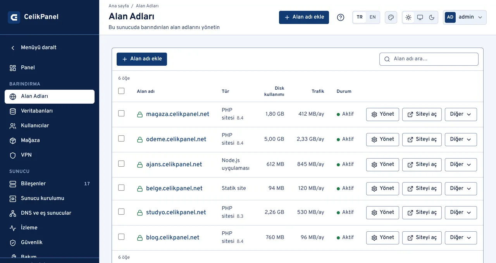
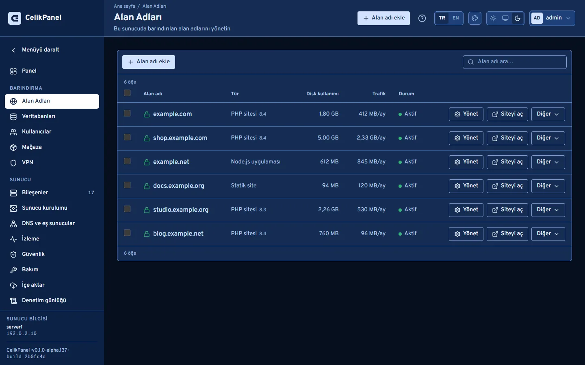
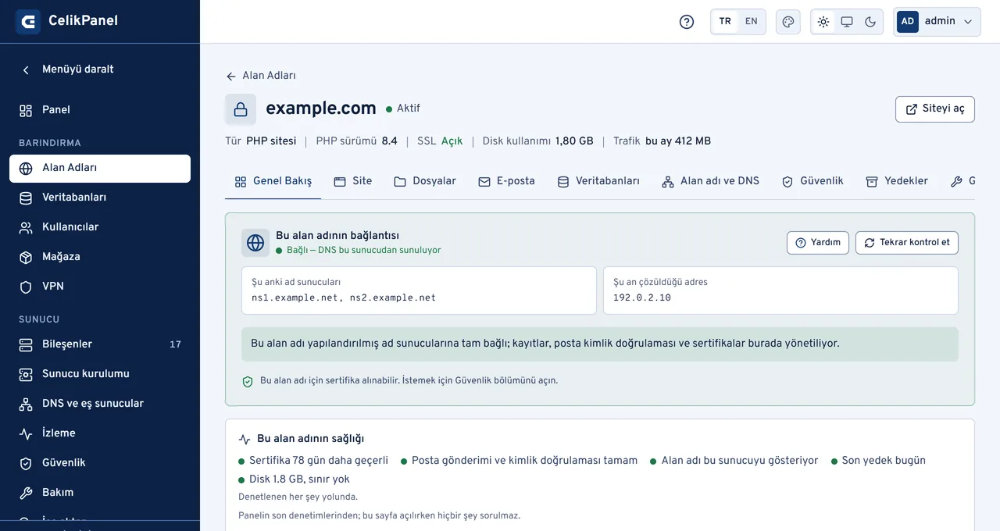
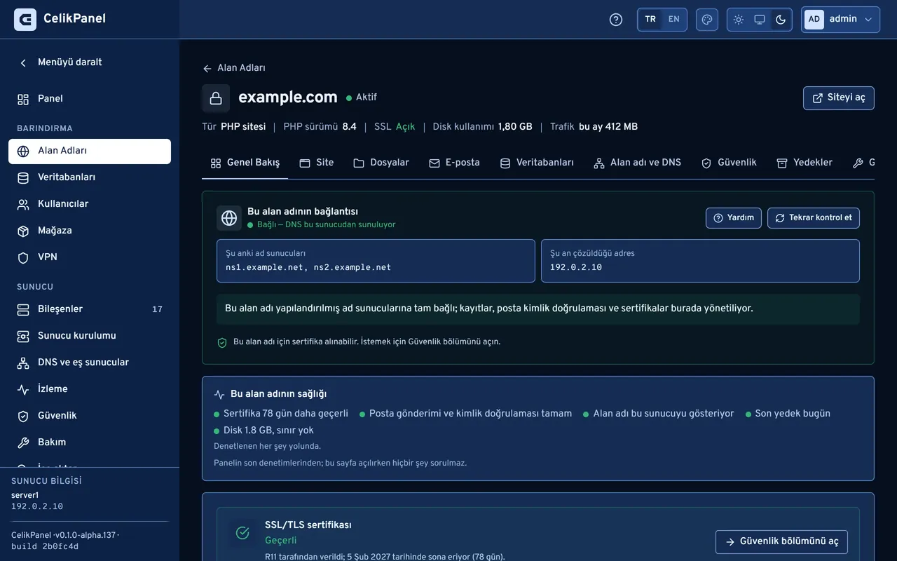
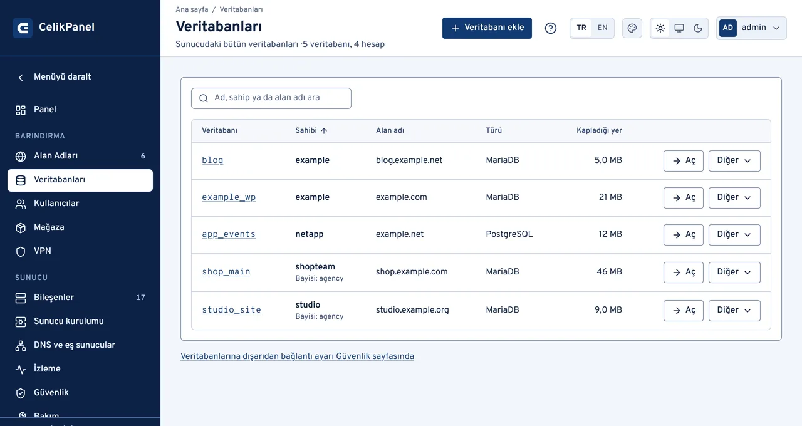
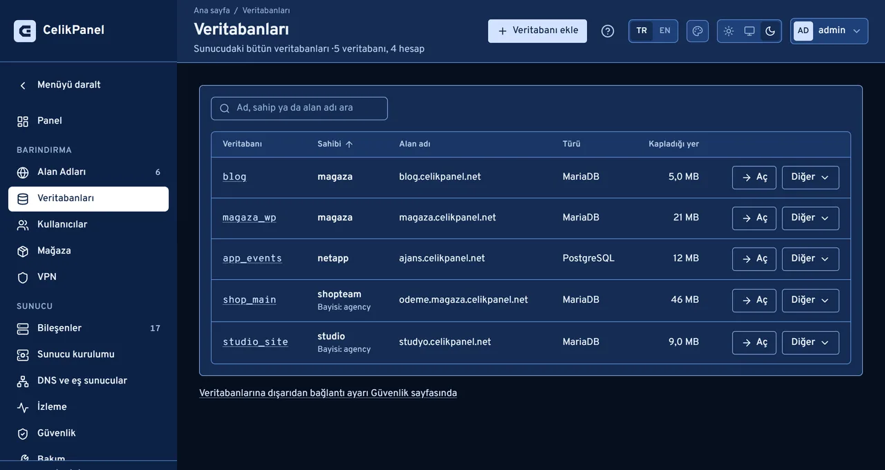

Web siteleri
PHP, Node.js ve statik siteler; her biri kendi kullanıcısıyla.
Alfa · 1.0’a kadar ücretsiz
Debian ve Ubuntu için hosting kontrol paneli: siteler, e-posta, DNS, veritabanları ve yedekler, kendi sunucunuzda.
timedatectl set-ntp true
curl -fL --proto '=https' -o celikpanel-install.sh https://celikpanel.net/get.sh &&
sh celikpanel-install.sh






Gerçek panel, örnek verilerle.
Bağımsız
Hepsi sisteminizin kendi hizmetleri. Panel yalnızca yönetir.
Bugün hâlâ panele bağlı olanlar: panelin ve posta sunucusunun sertifikaları, açılışta güvenlik duvarı, uzak yedekler. Ayrıntılar
Tek panel
Dağıtımınızın paketlerinden, yalnızca seçtikleriniz kurulur.
PHP, Node.js ve statik siteler; her biri kendi kullanıcısıyla.
Kendi ad sunucularınız ya da dış bir sağlayıcı; internete karşı denetlenir.
Her siteye ücretsiz. Neyi, ne zamana kadar koruduğunu gösterir.
Posta kutuları, yönlendirme, spam süzgeci ve web posta.
Zamanlanır; sunucuda tutulur ya da başka yere gönderilir.
Siz başlatırsınız. Yeni sürüm ayağa kalkmazsa eskisi geri gelir.
Ana ve yedek DNS; standart bölge aktarımıyla kopyalanır.